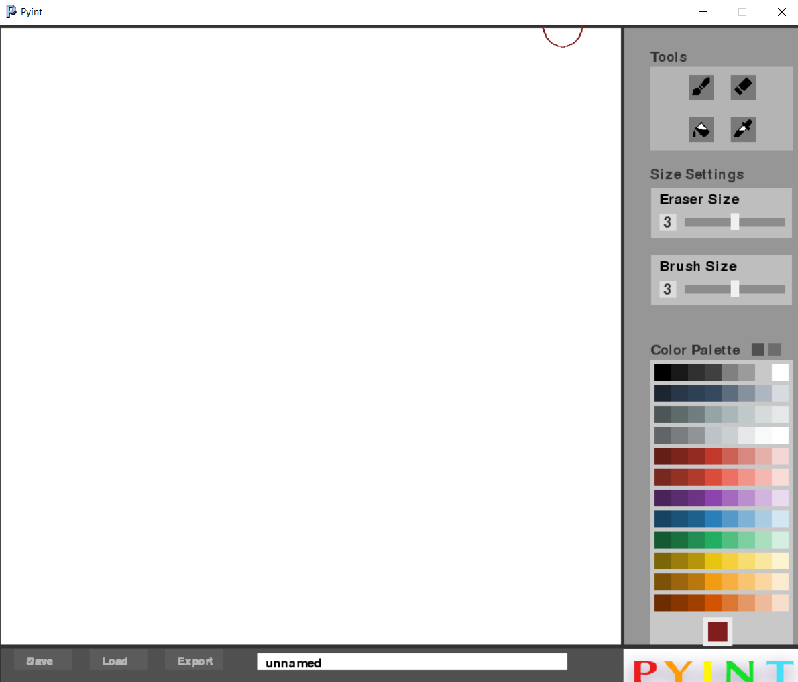
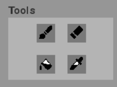
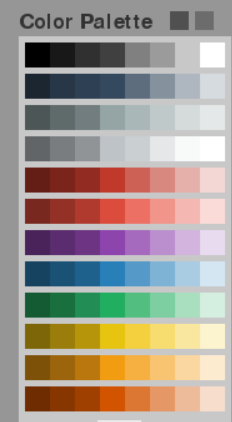
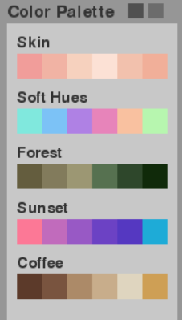
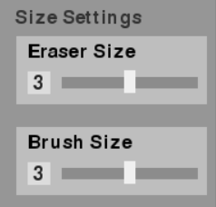

1 / 3

Caption Text
2 / 3

Caption Two
3 / 3

Caption Three
Пориньте у ностальгічну атмосферу графічних редакторів pазом з PYINT.py
За допомогою нашого графічного редактору ви зможете створютати не просто малюнки,
а піксельні ШЕДЕВРИ!
Головний екран

Інструменти
   
Настисніть сюди, щоб дізнатися більше